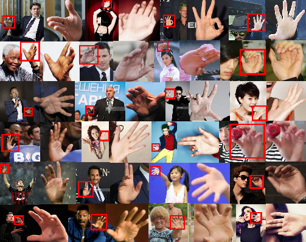

Le concept : Vie privée et surveillance biométrique
L'objectif de ce projet n'était pas seulement technique, mais aussi éthique. Je voulais démontrer qu'avec des moyens modestes (ceux d'un étudiant), il est possible d'identifier une personne à partir d'une simple photo de sa main.
Si je peux le faire avec des ressources limitées, des organisations disposant de moyens importants peuvent le faire à grande échelle, même sur des personnes masquées. Contrairement au visage ou à l'iris, la main est une donnée biométrique souvent négligée mais très riche en informations.
Le but de ce projet est de construire un modèle1 qui arrive à associer différentes photos de mains d'une même personne ensemble. Pour une meilleure compréhension, vous pourrez voir juste en dessous une animation et une présentation des étapes de ce projet. Enfin, le DevLog est disponible à la fin de cette page.
